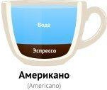
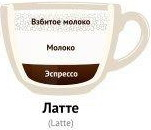
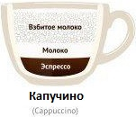
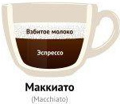
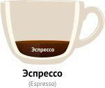

Добро пожаловать
Представляем вашему вниманию перечень видов кофе которые чаще встречаются.





Основные виды
- Американо
- Кофе эспрессо, разбавленный горячей водой в соотношении 1:2 или 1:3. Американо готовится на эспрессо-кофеварке: бариста после приготовления 30 мл эспрессо добавляет в него горячую воду до получения объема 119-160 мл.
- Латте
- Кофейный коктейль, состоящий из одной части эспрессо и двух частей прогретого молока с пеной.в переводе с итальянского означает молоко. ѕодают кофе-латте в айриш-бокале или в высоком бокале с трубочкой. ?ля аромата при приготовлении горячего и холодного латте добавляют разнообразные сиропы, за исключением цитрусовых, из-за которых молоко может скиснуть. „асто пенку на поверхности напитка украшают рисунками. Ёто целое искусство, называемое латте арт.
- Капучино
- Кофе с взбитым в горячую пену молоком и пышной шелковистой молочно-кофейной пеной. Свое название он получил благодаря монахам ордена капуцинов, которые, согласно легенде, первыми придумали добавлять в кофе взбитое молоко. Капучино - самый популярный напиток в кофейнях. Обычная порция — 150 мл. Рекомендуемая температура при подаче 60-70 градусов. Часто кофе капучино посыпают корицей или какао.
- Макиято
- Стандартный крепкий эспрессо, на который сверху кладется барной ложкой капелька очень нежной молочной пены (примерно 15 мл). Это настоящий итальянский вариант, переводится как пятнистый в наших кофейнях подаётся реже.
- Эспрессо (espresso)
- Крепкий черный кофе, сваренный при помощи кофемашины. Существует две трактовки перевода с итальянского espresso - 1) быстрый, 2) спрессованный, сваренный под давлением. Эспрессо считают королем среди кофе. Основу его вкуса составляют приятный баланс кислинки и горчинки и ощущение свежести и законченности вкуса. Стандартная порция кофе эспрессо – 30-35 мл. Идеальный эспрессо имеет однородную, ровную, плотную золотисто-ореховую пенку . Толщина крема должна быть не менее 2 мм. Подают эспрессо в течение первых полутора минут после приготовления, пьют быстро, несколькими глотками, смакуя пенку, иногда посыпанную сахарной пудрой. Также можно перед употреблением перемешать пенку с остальным кофе, так как вкус сконцентрирован именно в ней.